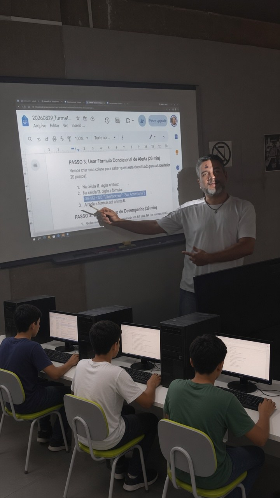

Gestão de Convênios
Controle de convênios municipais com entidades públicas e privadas, vigência, repasses, execução orçamentária e prestação de contas.

Especialista em Engenharia de Software · Analista de Sistemas · Perito Judicial · Consultor de TI
Projeto e desenvolvimento de sistemas sob medida, integrações e otimizações de banco de dados para o setor público e privado.

“Pai Celestial, no templo do silêncio eu faço um jardim para Ti, decorado com as flores de minha devoção.”
— Paramahansa Yogananda, Meditações Metafísicas
Portfólio
Plataformas que apoiam secretarias e órgãos municipais com transparência, controle e integração.
Controle de convênios municipais com entidades públicas e privadas, vigência, repasses, execução orçamentária e prestação de contas.
Unidades escolares, matrículas, turmas, transporte, merenda escolar e integração com o Censo Escolar (MEC).
Controle de materiais didáticos, uniformes e insumos escolares com rastreabilidade por lote e destino.
Acompanhamento de processos licitatórios, geração de documentos oficiais e publicação automática no Portal da Transparência.
Publicação de informações obrigatórias conforme a Lei de Acesso à Informação (LAI): licitações, folha de pagamento e despesas.
Dashboard de metas e indicadores por secretaria e programa de governo em tempo real.
Dados funcionais, folha de pagamento, férias e integração com o eSocial e sistema financeiro SIAFEM.
Controle de abastecimento, manutenção e rotas. Integração com Google Maps e Leaflet.
Portfólio
ERPs, integrações e sistemas setoriais construídos para operação contínua.
Plataforma modular em Delphi + SQL Server/Oracle: prontuário eletrônico, estoque de medicamentos, faturamento por convênio e agendamentos.
Estoque, compras, vendas, emissão de NF-e e cadastro de peças por compatibilidade (Delphi + Firebird).
Módulos de compras, vendas, financeiro, produção, estoque e fiscal (Delphi, Firebird e SQL Server).
Controle de documentos, não conformidades, planos de ação e calibração de instrumentos de precisão.
Mercado Livre (anúncios), Seguradoras (Porto Seguro, Liberty), PIX, boletos e eNotas.
Integração com instituições financeiras para PIX e boletos: Bradesco, Banco do Brasil, Itaú, Asaas e Mercado Pago.
Formação
Da base técnica à engenharia — uma formação contínua em software e computação.
UNIVESP — Universidade Virtual do Estado de São Paulo (previsto para 2028)
Ênfase em sistemas embarcados, automação, arquitetura de computadores e desenvolvimento de software.
UNIMEP — Universidade Metodista de Piracicaba (2007)
Pós-graduação focada em modelagem, análise de processos ágeis (XP) e qualidade de software.
FATEC-SP — Faculdade de Tecnologia de São Paulo (2005)
Desenvolvimento de sistemas, estruturas de algoritmos, redes de computadores e banco de dados.
Colégio Politec — Piracicaba/SP (1999)
Lógica de programação, desenvolvimento desktop e sistemas operacionais.
Experiência
Especialista em Engenharia de Software, Analista de Sistemas, Perito Judicial e Consultor de TI.
Cultura
Arte, disciplina e tradição como parte da trajetória pessoal.
A Capoeira é uma expressão cultural e corporal que une arte marcial, música, disciplina e preservação histórica.
Integrada à trajetória de vida e desenvolvimento pessoal, representa resiliência, respeito às tradições e trabalho comunitário.
Sou grato pelo aprendizado de dois grandes capoeiristas: CM Dentinho Baiano e Mestre Nego Duro.
Fale conosco
Vamos conversar sobre nosso próximo projeto.
Cartão digital: contato.papijunior.com.br